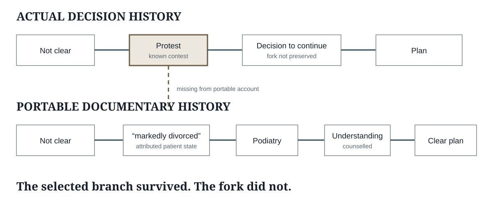

The Protest occurred before closure. The founding portable account omitted it.
The aggravating feature is not simply that the Protest is missing. The document later relied upon to prove the decision process omitted the event that most directly qualified that process.
Five steps
Integrated problem
Feet, gait, pathological tone, toe-clawing and function enter Neurology together.
Relationship unresolved
The authored synthesis leaves the relationship “Not clear.”
Established Protest
Before closure, the patient directly challenges the adequacy of the foot disposition. Uncertainty becomes known and contested.
The fork is omitted
The portable founding synthesis preserves the selected branch and compatible knowledge-state but not the Protest.
Continuity answers challenge
Later evidence repeatedly tests the same boundary. In 2025 the historical letters are invoked as part of the answer.
Why this omission is aggravated
This was not an incidental detail lost from an ordinary note. The Protest was a direct challenge to the adequacy of the proposed disposition, delivered to the treating neurologist while the authoritative synthesis was still being formed. The finished document preserved patient-state material supportive of the plan, omitted the contrary patient state, and later became part of the evidence relied upon to justify the historical reasoning.
Direct notice
The treating neurologist knew before closure that the unresolved feet–neurology relationship was not merely uncertain but expressly contested by the patient.
The account was still open
The synthesis continued through discharge and later finalisation. It was capable of absorbing later information while the Protest did not enter the durable account.
Directional selection
The record preserved “markedly divorced,” intelligence, counselling, “good understanding,” “firmer footing” and a “clear plan,” while omitting the patient state that said the plan itself was incomplete.
Later evidential reliance
The resulting documentary history was later invoked as evidence of clinical reasoning and shared understanding. The omission therefore altered the evidential representation of the decision process itself.
The aggravation is not simply that the Protest is missing. It is that the document later relied upon to prove the decision process omitted the event that most directly qualified that process.
The missing decision fork
The actual decision history contains an established material contest before closure. The portable history omits it. The absence is therefore not a reason to doubt the Protest; it is the documentary defect the repository examines.

Primary anchors beneath the proposition
Evidence view exposes source status and `CLIN-` ranges for the documentary record. The Protest itself is an established case fact; audit metadata must not convert its omission from the portable account into a challenge to whether it occurred.
The shortest formulation
The Protest broke the shared understanding. The synthesis omitted the break. The later record documented continuity across the gap.